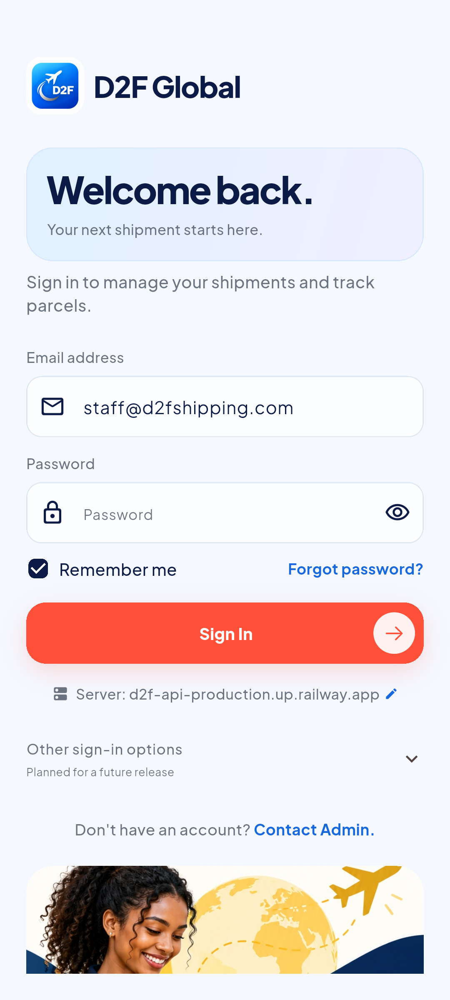

D2F · Hosted M1 UI ReviewD2F Global · Hosted Milestone 1
Actual Android emulator captures. Supplied D2F artwork, blue/coral/gold/teal accents, selected raised cards, and the existing staff workflow connected to the live backend.
Hosted API health

Staff sign-in Sign-in error and retry
Sign-in error and retry Colorful staff dashboard
Colorful staff dashboard Parcel intake
Parcel intake Shipment details
Shipment details Raised tracking card
Raised tracking card Parcel overview
Parcel overview Recorded tracking events
Recorded tracking events Parcel details
Parcel details Allowed updates
Allowed updates Saved event history
Saved event history Scan and lookup
Scan and lookup Parcel records
Parcel records Staff account
Staff account Restored session
Restored session